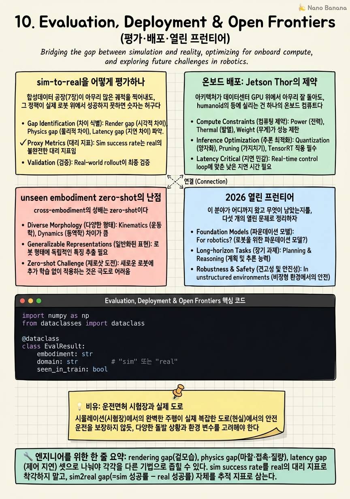

Evaluation, Deployment & Open Frontiers

🎯 학습 목표
- sim-to-real gap을 정량 평가하는 방법과 벤치마크를 안다
- 온보드(Jetson Thor) 배포의 지연·전력 제약을 안다
- unseen embodiment zero-shot의 난점(morphology conditioning)을 안다
- 2026 미해결 프런티어를 4개 이상 제시할 수 있다
- 빅테크 Physical AI 면접에서 데이터-vs-구조 긴장을 논증할 수 있다
열 챕터를 걸어왔다. 우리는 하나의 질문에서 출발했다 — GR00T는 navigation과 manipulation을 데이터로 다 먹는가, 아니면 구조적 분리가 여전히 필요한가. 그 답은 매 챕터에서 조금씩 선명해졌고, 이제 그것을 '실제로 돌아가는가'와 '어디까지 왔고 무엇이 남았는가'라는 두 개의 마지막 렌즈로 검증할 차례다. 아무리 우아한 아키텍처도 sim에서만 성립하고 실제 로봇 위에서 무너진다면 논문일 뿐 시스템이 아니다. 이 챕터는 그 시스템이 현실에서 얼마나 견디는지를 묻는다.
세 갈래를 통과한다. 첫째, 평가 — sim-to-real gap을 어떻게 종류별로(rendering/physics/latency) 분해하고, 여러 embodiment에서 success rate와 zero-shot transfer로 일반화를 어떻게 측정하는가. 둘째, 배포 — Jetson Thor라는 온보드 컴퓨트 예산 안에서 고주파 제어 루프, 전력·발열, 추론 지연이라는 물리적 벽에 계층 아키텍처가 어떻게 부딪히고 살아남는가. GR00T Reference Humanoid Robot(Unitree H2 + Sharpa 촉각손 + Jetson Thor, 2026 말)이 그 벽의 실물 좌표다. 셋째, 프런티어 — unseen embodiment zero-shot의 morphology conditioning 난제, vision sim2real의 rendering gap과 Real2Sim 반격, hierarchical route planner의 부재, 그리고 world model이 통합 substrate로 회귀하는 흐름까지.
그리고 마지막으로, 코스 전체를 하나의 좌표계로 접는다. 두 패러다임 — 데이터 스케일링(NavFoM)과 구조적 분리(COMPASS) — 사이에서 GR00T가 택한 하이브리드의 정확한 좌표, navigation의 흡수 경계선, 9장의 반론(데이터를 supervision으로)이 왜 프런티어의 심장인지. 그리고 이 모든 것을 빅테크 Physical AI 면접에서 '데이터 vs 구조'의 긴장으로 어떻게 논증할지. 이 코스는 사실을 외우는 코스가 아니라 이 긴장을 논증하는 능력을 기르는 코스였다.
핵심 내용
sim-to-real을 어떻게 평가하나
합성데이터 공장(7장)이 아무리 많은 궤적을 찍어내도, 그 정책이 실제 로봇 위에서 성공하지 못하면 숫자는 허구다. 그래서 평가의 첫 단추는 sim-to-real gap을 하나의 뭉텅이가 아니라 종류별로 분해하는 것이다. gap은 최소 세 갈래다.
첫째, rendering gap. 시뮬레이터의 카메라 영상이 실제 카메라 영상과 다르다 — 조명, 그림자, 질감, 센서 노이즈. sim에서 완벽히 학습한 vision 정책이 실제 픽셀 분포 앞에서 무너지는 이유다. Cosmos Transfer의 sim→photoreal 전이(5·7장)가 겨냥하는 게 바로 이 축이다. 둘째, physics gap. 마찰, 접촉 강성, 액추에이터 지연, 질량 분포가 sim과 실제에서 다르다. loco-manipulation처럼 접촉이 지배하는 과제에서 이 gap이 치명적이다 — 손끝 마찰 계수 하나가 grasp 성패를 가른다. 셋째, latency gap. sim에서는 관측→행동이 즉각적이지만, 실제 로봇에서는 센서 읽기, 추론, 액추에이터 명령 사이에 지연이 낀다. 고주파 제어 루프에서 이 지연은 정책을 불안정하게 만든다. 이 세 번째 축이 다음 섹션의 배포 제약과 직결된다.
측정은 여러 embodiment에서의 success rate를 축으로 한다. 하나의 정책을 여러 로봇 형태(다른 팔 길이, 다른 손, 다른 다리 구성)에 올려 각각의 과제 성공률을 집계하고, 그 분산과 평균을 함께 본다. 여기서 세 가지 서로 다른 질문이 갈린다. (1) seen embodiment에서의 success rate — 학습에 본 로봇에서 얼마나 잘하나. (2) cross-embodiment 일반화 — 학습 분포 안의 여러 로봇에 걸쳐 얼마나 고르게 잘하나(분산이 작을수록 좋다). (3) zero-shot transfer — 학습에 전혀 없던 새 embodiment나 새 과제에 finetune 없이 얼마나 버티나. 이 세 번째가 가장 어렵고, 다음다음 섹션의 프런티어로 이어진다.
평가에서 흔한 함정은 sim success rate를 real success rate의 대리 지표로 착각하는 것이다. sim-to-real gap이 존재하는 한, sim에서의 95%가 real에서의 95%를 보장하지 않는다. 그래서 진지한 평가는 반드시 real-world rollout을 포함하고, sim success와 real success의 격차 자체를 하나의 지표(sim2real gap = sim 성공률 − real 성공률)로 추적한다. 이 격차가 작아지는 방향으로 rendering·physics·latency를 각각 좁히는 게 평가 주도 개발의 골격이다. 코드 예제에서 이 집계와 격차 계산을 harness로 스케치한다.
온보드 배포: Jetson Thor의 제약
아키텍처가 데이터센터 GPU 위에서 아무리 잘 돌아도, humanoid의 등에 실리는 건 하나의 온보드 컴퓨트다. NVIDIA의 좌표는 명확하다 — 차세대는 Jetson Thor, 현행·저전력 구간은 Jetson AGX Orin. 그리고 이 배포의 실물 기준점이 GR00T Reference Humanoid Robot이다: Unitree H2 바디에 Sharpa 촉각손을 얹고 Jetson Thor를 온보드 브레인으로 삼은 2026년 말 레퍼런스 플랫폼. 우리가 5개 챕터에 걸쳐 해부한 3층 구조가 결국 이 한 대의 로봇 위에서 실시간으로 돌아가야 한다.
온보드 배포는 세 개의 물리적 벽을 세운다. 첫째, 실시간 지연. whole-body control(6장)은 수백 Hz의 고주파 제어 루프를 요구한다. 관측에서 모터 명령까지의 지연이 이 주기를 넘으면 제어가 불안정해진다 — 넘어지는 로봇은 논문 각주가 아니라 부러진 하드웨어다. 둘째, 전력·발열. 배터리로 움직이는 로봇에서 추론에 쓰는 와트는 곧 가동 시간과 열이다. 데이터센터라면 무시할 발열이 밀폐된 humanoid 몸통 안에서는 스로틀링을 부른다. 셋째, 온보드 추론 예산. Jetson Thor의 메모리와 연산량은 유한하다. 수십억 파라미터 VLA를 통째로, 그것도 여러 번, 실시간에 돌릴 여유는 없다.
여기서 계층 아키텍처(4장)가 왜 실용적 필연이었는지가 드러난다. 세 층은 서로 다른 주파수로 돈다. Cosmos Reason(뇌, 5장)의 planning은 느리고 무겁지만 드물게(초당 한두 번, 혹은 과제 단계가 바뀔 때만) 돌면 된다. VLA policy(정책)는 중간 주파수로 subgoal을 낸다. whole-body RL controller(모터)는 가장 가볍고 가장 빠르게(수백 Hz) 반사적으로 돈다. 만약 이 전부를 하나의 monolithic end-to-end 모델로 매 제어 스텝마다 돌리려 했다면, Jetson Thor의 추론 예산은 즉시 파산했을 것이다. planning은 위에서 드물게, reaction은 아래에서 촘촘하게(5장의 결론)라는 계층 분리가, 배포 단에서는 곧 '무거운 추론을 저주파로, 가벼운 추론을 고주파로' 라는 컴퓨트 예산 배분 전략이 된다.
이것이 이 코스의 하이브리드 논제가 배포에서 회수되는 지점이다. specialist distillation(2장 COMPASS)으로 큰 정책을 작고 빠른 온보드 정책으로 증류하고, 계층 분리로 각 층의 실행 주파수를 컴퓨트 예산에 맞추고, geometric localization 스택(8장 cuVSLAM·nvblox·Nav2)을 학습 모델과 분리해 검증된 저지연 엔지니어링에 맡긴다. 이 모든 설계 결정이 '데이터로 다 때려넣기'가 아니라, 온보드 실시간이라는 물리적 제약을 존중한 하이브리드였다. 배포가 아키텍처를 강제한다 — 이것이 이 섹션의 요체다.
unseen embodiment zero-shot의 난점
cross-embodiment의 성배는 zero-shot이다. 학습에 전혀 없던 새 로봇 몸을 가져와, finetune 한 줄 없이, 그 위에서 정책이 바로 작동하는 것. 이것이 되면 로봇마다 데이터를 새로 모으는 지옥에서 벗어난다. 하지만 여기가 2026년에도 가장 단단히 막힌 벽이다.
핵심 난제는 morphology conditioning — 정책에게 '너는 지금 어떤 몸에 들어 있는가'를 어떻게 알려줄 것인가다. 두 갈래의 철학이 대립한다. 한쪽은 측정 가능한 물리량으로 조건화한다: 링크 길이, 관절 수와 축, 질량, 관절 한계 같은 kinematic·dynamic 파라미터를 명시적으로 넣는다. 해석 가능하고, 새 로봇의 스펙만 알면 즉시 조건 벡터를 만들 수 있다는 장점이 있다. 다른 쪽은 learned embodiment 벡터로 조건화한다: 각 embodiment를 데이터에서 학습된 latent 임베딩으로 표현한다. 표현력이 크지만, 학습에 없던 로봇의 벡터를 어떻게 얻을 것인가라는 순환 문제에 부딪힌다 — 바로 그 unseen 로봇의 데이터가 없어서 zero-shot을 하려는 것인데.
왜 이게 근본적으로 어려운가. 새 morphology는 새 action space와 새 dynamics를 동시에 뜻한다. 팔이 하나 더 달리거나 다리 구성이 바뀌면 제어해야 할 자유도의 의미 자체가 달라진다. 언어 모델의 zero-shot은 '같은 토큰 공간'에서 새 조합을 다루지만, 로봇의 unseen embodiment는 토큰 공간(action space) 자체가 바뀌는 것에 가깝다. 그래서 단순히 데이터를 더 넣는다고 자동으로 해결되지 않는다 — 이것이 9장 반론('Robots Need More than VLA and World Models')의 embodiment interface 문제와 정확히 맞닿는 지점이다. 데이터 스케일링만으로는 넘지 못하는 구조적 간극이 여기 있다.
실무의 타협은 zero-shot을 고집하기보다 few-shot 적응을 설계에 넣는 것이다. 새 로봇에서 소량의 궤적으로 빠르게 finetune하거나, whole-body RL controller(6장)를 그 하드웨어에 맞춰 재학습하되 상위 VLA·planning 층은 재사용한다. 여기서도 계층 분리가 값을 한다 — embodiment가 바뀔 때 가장 크게 바뀌는 건 하위 모터 층이고, 상위의 '무엇을 어떤 순서로'(planning)는 상대적으로 embodiment-invariant하다. 즉 계층 구조는 배포 예산뿐 아니라 cross-embodiment 적응의 관점에서도 어느 층을 갈아끼울지를 국소화해준다. zero-shot이 완전히 열리기 전까지, 이 '층별 적응'이 현실적 다리다.
2026 열린 프런티어
이 분야가 어디까지 왔고 무엇이 남았는지를, 다섯 개의 열린 문제로 정리하자. 각각은 앞 챕터의 실마리가 미해결로 남은 지점이다.
(1) unseen embodiment zero-shot. 앞 섹션의 morphology conditioning 문제 — 측정 물리량이냐 learned 벡터냐의 긴장이 아직 풀리지 않았다. 새 action space·새 dynamics를 데이터 없이 다루는 일반 이론이 부재하다. cross-embodiment 일반화의 최종 관문.
(2) vision sim2real: rendering gap과 Real2Sim의 반격. Cosmos Transfer가 sim→real 방향으로 rendering gap을 좁혔다면, 반대 방향의 흐름이 부상한다 — 실제 장면을 시뮬레이터로 끌어올리는 Real2Sim이다. 예를 들어 VR-Robo(arXiv:2502.01536)는 실제 환경을 photoreal·물리 상호작용 가능한 sim으로 재구성해, 학습·평가에 쓸 수 있는 digital twin을 만든다. sim→real 생성과 real→sim 재구성이 만나면, 학습·계획·평가가 같은 world를 공유하는 방향으로 수렴한다.
(3) hierarchical route planner의 부재. 8장에서 봤듯 GR00T는 고수준 navigation 의사결정을 흡수했지만, 긴 수평의 route planning — '건물 이쪽 끝에서 저쪽 끝까지 어떤 경로로'를 위상적으로 계획하는 층 — 은 학습 스택 안에 아직 매끈하게 통합돼 있지 않다. 여전히 Nav2 같은 geometric planner에 기댄다. 학습된 planning과 geometric planning 사이의 이 이음매가 열린 설계 문제다.
(4) world model이 통합 substrate로 회귀한다. 5장에서 본 Cosmos 3의 '생성·추론·행동 시뮬 통합' 흐름이 navigation으로도 번진다 — NavWAM/WAM-Nav류의 흐름은 navigation을 별도 스택이 아니라 world model 위에서 상상·계획하는 문제로 되돌린다. 즉 8장에서 '흡수 안 됐다'고 그은 경계선조차, world model이 통합 substrate가 되면 다시 그 안으로 빨려 들어갈 수 있다. 경계선은 고정된 게 아니라 substrate의 발전에 따라 이동한다.
(5) 데이터→supervision 변환 인터페이스. 9장 반론의 심장. 진짜 병목은 더 큰 VLA나 더 많은 raw 데이터가 아니라, 비정형 데이터를 grounded supervision으로 바꾸는 인터페이스(data·embodiment·world-model·reward)의 부재라는 주장이다. 위 네 프런티어가 모두 이 하나로 수렴한다 — zero-shot도, Real2Sim도, world model 통합도, 결국 '무엇을 정답 신호로 삼아 학습시킬 것인가'의 문제다. 2026년 이 분야의 무게중심은 정책 스케일링에서 supervision 설계로 이동하는 중이다.
종합: 데이터 vs 구조, 면접에서 어떻게 논할까
이제 코스 전체를 하나의 좌표계로 접자. 1장에서 세운 축은 두 극점이었다.
한 극점은 데이터 스케일링이다 — 충분히 큰 정책에 충분히 많은 데이터를 넣으면 navigation도 manipulation도 하나의 모델이 emergent하게 다 배운다. NavFoM(9장, 802만 샘플 규모)이 이 극점의 순수한 형태다. 다른 극점은 구조적 분리다 — 서로 다른 문제는 서로 다른 모듈로 명시적으로 나누고, 각 모듈을 특화 학습·특화 엔지니어링으로 푼다. COMPASS(2장)의 IL+Residual RL+Distillation 파이프라인이 이 극점이다.
GR00T의 좌표는 정확히 그 사이의 하이브리드다. 표로 정리하면 이 코스의 뼈대가 한눈에 들어온다.
| 구성요소 | 어느 극점에 가까운가 | 코스 챕터 |
|---|---|---|
| 합성데이터 공장(Isaac + Cosmos Transfer) | 데이터 스케일링 | 5·7 |
| 계층 아키텍처(뇌-정책-모터) | 구조적 분리 | 4·5·6 |
| specialist distillation(COMPASS 재배치) | 구조 → 데이터로 재배치 | 2 |
| navigation 고수준 흡수 | 데이터 스케일링 | 8 |
| metric localization(cuVSLAM 등) | 구조적 분리(geometric) | 8 |
이 표가 이 코스의 논제 전체다. GR00T는 어느 한 극점을 택하지 않았다. 데이터로 밀어붙일 수 있는 곳(합성데이터, 고수준 navigation, VLA 정책)은 데이터로 밀고, 구조가 필요한 곳(계층 분리, whole-body 제어, metric localization)은 구조로 지탱했다. COMPASS는 죽지 않고 데이터 엔진으로 재배치됐고, navigation은 고수준 의사결정만 흡수되고 geometric localization은 엔지니어링 스택에 남았다. 이것이 '통합의 경계선'이다.
그리고 9장의 반론이 이 하이브리드조차 넘어선다 — 데이터든 구조든, 결국 비정형 데이터를 grounded supervision으로 바꾸는 인터페이스가 없으면 둘 다 병목에 걸린다는 것. 그래서 데이터 vs 구조는 이분법이 아니라, 'supervision을 어떻게 설계하는가'라는 제3의 축 위에서 재조명되어야 한다.
면접 관점에서, 빅테크 Physical AI 직군이 평가하는 건 정확히 이 논증 능력이다. 'GR00T가 뭐예요'에 사실을 나열하는 후보와, '데이터 vs 구조의 긴장 위에서 GR00T는 이런 좌표를 택했고, 그 선택은 sim-to-real·온보드 배포·cross-embodiment 일반화라는 제약에서 이렇게 정당화된다'고 논증하는 후보는 신호가 다르다. sim-to-real gap을 rendering/physics/latency로 분해할 수 있는가. 계층 vs end-to-end 트레이드오프를 배포 예산과 연결해 논할 수 있는가. cross-embodiment 일반화가 왜 데이터만으로 안 열리는지 morphology conditioning으로 설명할 수 있는가. 어떤 것을 데이터로 밀고 어떤 것을 구조로 지탱할지, 그 경계선을 제약 조건으로부터 논증할 수 있는가. 이 네 질문에 답할 수 있으면 이 코스는 제 몫을 한 것이다. 사실은 시간이 지나면 낡지만, 이 긴장을 논증하는 프레임은 다음 모델, 다음 논쟁에서도 유효하다.
💡 비유로 이해하기
sim-to-real 평가와 배포의 전체 그림은 운전을 배우는 과정에 그대로 겹친다.
시뮬레이터에서의 학습은 운전면허 시험장이다. 코스는 통제돼 있고, 조명은 일정하며, 갑자기 뛰어드는 아이도 없다. 여기서 90점을 받는 건 필요조건이지만 충분조건이 아니다. 시험장 만점이 곧 도로 위 안전을 뜻하지 않는다는 것 — 이것이 sim success rate ≠ real success rate이고, 그 격차가 곧 sim-to-real gap이다. 그리고 이 gap조차 종류가 다르다. 시험장과 도로의 '노면·표지판 겉모습' 차이가 rendering gap, '실제 차의 브레이크 감·타이어 접지력' 차이가 physics gap, '내가 판단하고 발이 페달에 닿기까지의 시간'이 latency gap이다.
실제 도로로 나가는 것이 온보드 배포다. 여기서는 데이터센터의 무한한 계산이 아니라, 내 머리 하나로 실시간에 판단해야 한다(Jetson Thor의 추론 예산). 그래서 능숙한 운전자는 모든 판단을 같은 속도로 하지 않는다. '어느 길로 갈지'(route planning)는 출발 전에 드물게 정하고, '차선을 바꿀까'(정책)는 몇 초마다, '지금 핸들을 미세 조정'(반사적 제어)은 매 순간 한다. 이 주파수 분리가 바로 GR00T의 계층 아키텍처 — planning은 위에서 드물게, reaction은 아래에서 촘촘하게. 모든 걸 매 순간 처음부터 계산하는 운전자는 정보 과부하로 사고를 낸다. 유한한 뇌 예산 안에서 살아남으려면 계층이 필수다.
그리고 unseen embodiment zero-shot은 승용차만 몰던 사람이 갑자기 대형 트럭이나 오토바이에 오르는 것이다. '어디로 갈지'(고수준 계획)는 그대로 옮겨가지만, '이 몸을 어떻게 다룰지'(하위 제어)는 완전히 새로 배워야 한다 — 트럭의 회전 반경, 오토바이의 균형. 그래서 노련한 운전자도 새 차종에는 몇 시간의 적응(few-shot finetune)이 필요하다. 상위 판단은 옮겨가고 하위 제어만 갈아끼우는 이 감각이, 왜 cross-embodiment 적응에서도 계층 분리가 값을 하는지를 정확히 설명한다. 면허 시험장에서 잘하는 것과 낯선 차로 낯선 도로를 실시간에 완주하는 것은 다른 능력이고, 이 코스는 후자를 평가하는 법을 다뤘다.
💻 코드 예시
cross-embodiment 평가 harness를 스케치한다. 핵심은 두 가지다 — (1) 여러 embodiment에서 success rate를 집계해 seen 성능, cross-embodiment 일반화(분산), zero-shot을 분리해 보고, (2) 같은 정책을 sim과 real 양쪽에서 굴려 sim2real gap = sim 성공률 − real 성공률을 지표로 계산한다. sim에서의 높은 숫자를 real의 대리 지표로 착각하지 않는 것이 이 harness의 존재 이유다.
import numpy as np
from dataclasses import dataclass
@dataclass
class EvalResult:
embodiment: str
domain: str # "sim" 또는 "real"
seen_in_train: bool
successes: int
trials: int
@property
def success_rate(self):
return self.successes / max(1, self.trials)
def aggregate(results):
"""cross-embodiment 평가를 세 축으로 분해해 리포트."""
by_key = {}
for r in results:
by_key.setdefault((r.embodiment, r.domain), []).append(r)
# 1) embodiment별 real success rate
real = {e: r[0].success_rate
for (e, d), r in by_key.items() if d == "real"}
# 2) seen embodiment 평균 vs cross-embodiment 분산(고를수록 일반화)
seen = [r.success_rate for r in results
if r.domain == "real" and r.seen_in_train]
seen_mean = float(np.mean(seen)) if seen else float("nan")
cross_std = float(np.std(list(real.values()))) if real else float("nan")
# 3) zero-shot: 학습에 없던 embodiment의 real success
zeroshot = {e: r[0].success_rate
for (e, d), r in by_key.items()
if d == "real" and not r[0].seen_in_train}
# 4) sim2real gap = sim 성공률 - real 성공률 (embodiment별)
sim = {e: r[0].success_rate
for (e, d), r in by_key.items() if d == "sim"}
sim2real_gap = {e: sim[e] - real[e]
for e in real if e in sim}
return {
"seen_mean": seen_mean, # seen에서 얼마나 잘하나
"cross_std": cross_std, # 낮을수록 고른 일반화
"zeroshot": zeroshot, # unseen embodiment 성능
"sim2real_gap": sim2real_gap, # 클수록 sim이 현실을 과대평가
}
# 함정 방지: sim success 하나만 보고 배포하지 않는다.
# sim2real_gap 이 크면 rendering/physics/latency 중 어디서
# 새는지 분해해 좁혀야 한다.이 harness의 설계가 곧 이 챕터의 평가 철학이다. EvalResult는 embodiment와 domain(sim/real)과 seen 여부를 함께 들고 있어, 하나의 success rate 숫자를 세 개의 서로 다른 질문으로 쪼갤 수 있다. (1) seen_mean은 학습에 본 로봇에서의 성능, (2) cross_std는 여러 embodiment에 걸친 성능의 분산 — 이 값이 작아야 진짜 cross-embodiment 일반화다(평균이 높아도 특정 로봇만 잘하면 분산이 크다), (3) zeroshot은 학습에 전혀 없던 embodiment의 real 성능으로, 앞 섹션의 morphology conditioning 난제가 숫자로 드러나는 곳이다. 핵심은 (4)의 sim2real_gap = sim 성공률 − real 성공률이다. 이 값이 크다는 건 sim이 현실을 과대평가하고 있다는 뜻이고, 그럴 때 우리는 그 gap을 rendering·physics·latency 중 어디서 새는지 다시 분해해 각각을 좁힌다. 맨 아래 주석이 경고하듯, sim success 하나만 보고 배포하는 것은 시험장 만점으로 고속도로에 나가는 것과 같다. 실제 GR00T 평가 스택은 이보다 훨씬 복잡하지만, '여러 embodiment × sim/real을 교차로 집계하고 gap 자체를 지표로 추적한다'는 뼈대는 동일하다.
🏭 현업에서의 평가
✅ 시니어가 보는 것
- sim-to-real gap을 rendering·physics·latency 세 종류로 분해하고, 각각을 좁히는 서로 다른 기법(Cosmos Transfer, domain randomization, 제어 주파수 설계)을 연결
- sim success rate를 real의 대리 지표로 착각하지 않고, sim2real gap 자체를 추적 지표로 삼는 평가 규율
- 계층 아키텍처를 온보드 배포 제약(Jetson Thor의 지연·전력·추론 예산)과 연결해, 왜 planning은 저주파·reaction은 고주파인지 컴퓨트 예산으로 논증
- cross-embodiment 일반화를 seen 성능·분산·zero-shot 세 축으로 분리하고, unseen embodiment가 왜 morphology conditioning 문제로 데이터만으론 안 열리는지 설명
- 코스 전체를 '데이터 스케일링(NavFoM) vs 구조적 분리(COMPASS)' 좌표계로 접고, GR00T의 하이브리드 좌표를 각 구성요소별로 배치
- 9장 반론(데이터를 supervision으로)을 프런티어의 심장으로 인식하고, 데이터 vs 구조를 supervision 설계라는 제3축에서 재조명
⚠️ 레드 플래그
- sim-to-real gap을 하나의 뭉텅이로 다루고 rendering/physics/latency로 분해하지 못함
- sim success rate가 높다는 이유로 real 배포 성공을 단정 (시험장 만점=도로 안전 착각)
- 계층 아키텍처를 '그냥 설계 취향'으로 보고, 온보드 실시간·컴퓨트 예산이라는 물리적 강제와 연결하지 못함
- cross-embodiment zero-shot을 '데이터 더 넣으면 된다'로 뭉개고 action space·dynamics가 바뀌는 구조적 간극을 못 봄
- 코스 사실을 나열만 하고 '데이터 vs 구조' 긴장으로 논증하지 못함 — GR00T의 각 선택이 어떤 제약에서 정당화되는지 설명 못 함
- navigation의 흡수 경계선을 고정된 것으로 보고, world model이 통합 substrate로 회귀하며 경계선이 이동한다는 동역학을 놓침
🎤 예상 인터뷰 질문
- sim에서 95% 성공하던 loco-manipulation 정책이 실제 humanoid에서 40%로 떨어졌다. gap을 rendering·physics·latency로 분해하고, 각각을 진단·완화할 실험을 설계하라. 어떤 지표로 진전을 추적하겠는가?
- GR00T의 3층 구조 전부를 하나의 end-to-end 모델로 합쳐 Jetson Thor에 올리자는 제안이 왔다. 온보드 배포 제약(지연·전력·추론 예산)과 whole-body 고주파 제어 루프 관점에서 이 제안의 문제를 논증하라.
- 새 humanoid(학습에 없던 morphology)에 정책을 올려야 한다. zero-shot이 왜 어려운지 morphology conditioning(측정 물리량 vs learned 벡터)으로 설명하고, 계층 구조를 활용한 현실적 few-shot 적응 전략을 제시하라.
- '로봇 학습은 결국 더 큰 VLA와 더 많은 데이터의 문제다'라는 주장에 반론하라. NavFoM(데이터 극점)과 COMPASS(구조 극점)를 대비하고, GR00T의 하이브리드 좌표와 9장의 supervision 인터페이스 논점을 엮어 답하라.
- GR00T는 navigation의 고수준 의사결정은 흡수했지만 metric localization은 geometric 스택에 남겼다. 이 경계선을 어디에 긋는 게 옳은지, 그리고 world model이 통합 substrate로 발전하면 이 경계선이 어떻게 이동할지 논하라.
✨ 핵심 요약
sim-to-real gap은 종류별로 분해해야 다룰 수 있다
rendering gap(겉모습), physics gap(마찰·접촉·질량), latency gap(제어 지연) 셋으로 나눠야 각각을 다른 기법으로 좁힐 수 있다. sim success rate를 real의 대리 지표로 착각하지 말고, sim2real gap(=sim 성공률 − real 성공률) 자체를 추적 지표로 삼는다.
cross-embodiment 평가는 세 축으로 갈린다
seen embodiment 성능, 여러 embodiment에 걸친 분산(작을수록 고른 일반화), 그리고 학습에 없던 embodiment의 zero-shot transfer. 평균이 높아도 특정 로봇만 잘하면 일반화가 아니다.
배포가 아키텍처를 강제한다 — Jetson Thor의 세 벽
온보드 배포는 실시간 지연(고주파 제어 루프), 전력·발열, 추론 예산이라는 물리적 벽을 세운다. GR00T Reference Humanoid(Unitree H2 + Sharpa 촉각손 + Jetson Thor, 2026 말)이 그 실물 기준점. 계층 분리는 취향이 아니라 이 예산 안에서 살아남기 위한 필연이다.
계층 분리 = 주파수별 컴퓨트 예산 배분
planning(Cosmos Reason)은 무겁지만 저주파로 드물게, VLA 정책은 중주파로, whole-body 제어는 가볍고 고주파로. monolithic end-to-end를 매 스텝 돌리면 온보드 예산이 파산한다. '위에서 드물게, 아래에서 촘촘하게'가 배포에서 회수되는 지점.
unseen embodiment zero-shot은 morphology conditioning이 막고 있다
정책에게 '어떤 몸인가'를 알리는 문제 — 측정 물리량(링크 길이·관절)이냐 learned 벡터냐의 긴장. 새 morphology는 새 action space·새 dynamics라 데이터만 늘려선 안 열린다. 현실 타협은 상위 planning은 재사용하고 하위 모터 층만 few-shot으로 갈아끼우는 층별 적응.
2026 열린 프런티어 다섯
(1) unseen embodiment zero-shot, (2) vision sim2real과 Real2Sim의 반격(VR-Robo류 digital twin), (3) hierarchical route planner의 부재(여전히 geometric), (4) world model이 통합 substrate로 회귀(NavWAM/WAM-Nav — 흡수 경계선마저 이동), (5) 데이터를 grounded supervision으로 바꾸는 인터페이스. 네 문제가 (5)로 수렴한다.
코스 종합: GR00T는 데이터와 구조 사이의 하이브리드 좌표
합성데이터 공장·고수준 navigation·VLA는 데이터 스케일링(NavFoM 극점)으로, 계층 분리·whole-body 제어·metric localization은 구조적 분리(COMPASS 극점)로. COMPASS는 죽지 않고 데이터 엔진으로 재배치됐고, navigation은 고수준만 흡수되고 geometric localization은 엔지니어링에 남았다. 어느 한 극점이 아니라 제약이 경계선을 정한다.
면접에서 평가되는 건 사실이 아니라 논증 프레임
빅테크 Physical AI 직군은 '데이터 vs 구조' 긴장, sim-to-real 분해, 계층 vs end-to-end 트레이드오프, cross-embodiment 일반화를 제약 조건으로부터 논증하는 능력을 본다. 9장 반론(supervision 설계)을 제3축으로 세워야 완성된다. 사실은 낡지만 이 프레임은 다음 모델·다음 논쟁에서도 유효하다.